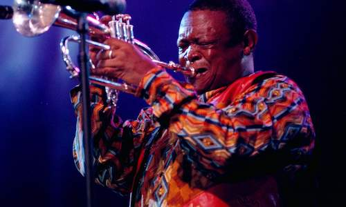
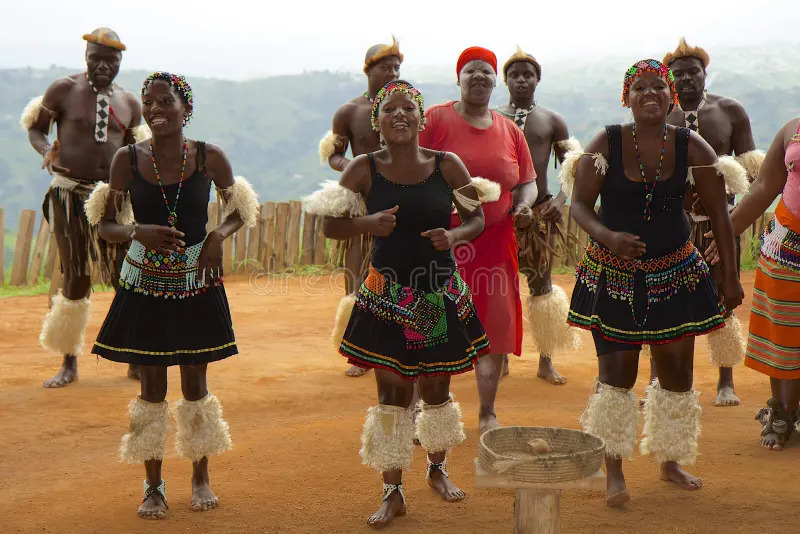
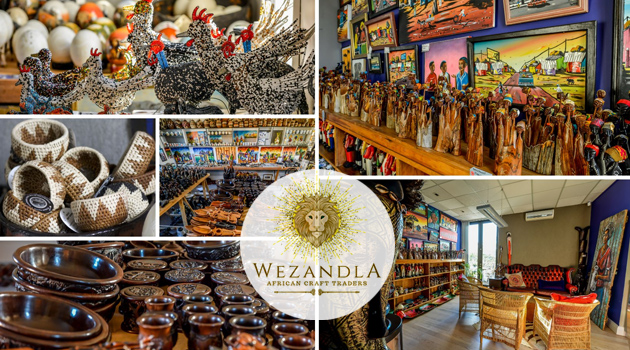

Music, Dance & Crafts
South Africa is renowned for its vibrant music, energetic dance, and intricate crafts. Traditional music includes drumming, choral singing, and instrumental performances that vary across cultures such as Zulu, Xhosa, and Sotho.
Dance is an expressive art form, showcased during ceremonies, festivals, and cultural events. Local artisans produce beautiful beadwork, pottery, and woven crafts, reflecting the country’s cultural diversity and artistic heritage. Experiencing these art forms gives visitors a deep appreciation of South Africa’s living traditions.